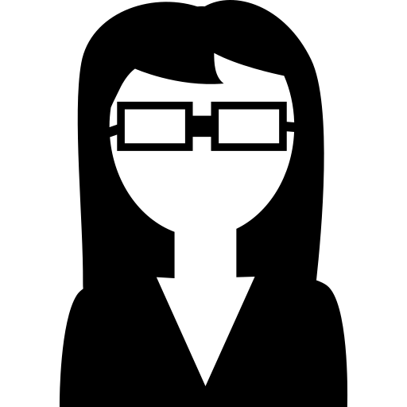

/betaschmitz
Mestra em Física pela Universidade Federal de Pelotas e doutora em Geofísica Espacial pelo Instituto Nacional de Pesquisas Espaciais. Sou uma cientista apaixonada por fotografia, gatos e python.